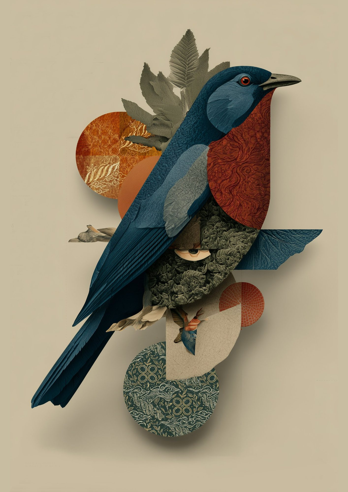
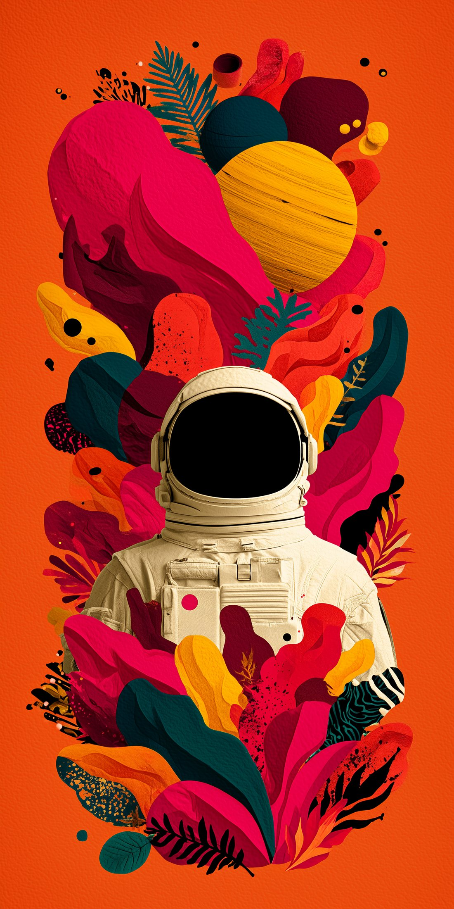

Personal Portfolio · Artwork, Design & Research
Designer, Artist & Educator
Assistant Professor and Enrichment Program Coordinator
New Media Program, School of Design, Bina Nusantara University (BINUS)
“More than a decade spent on a single question: how a student moves from imitation to a position of their own.”
01 · Exhibited artwork
Exhibitions

Media X Space 2026
Echoes of the Loom: Ancestral Entropy
Roland Ananda, 2026. Contemporary 2D artwork, printed poster.
This contemporary 2D artwork is a visual response to the complex intersection of cyclical human perception, natural entropy, and indigenous ecology, deeply rooted in the Christian theology of creation care and biblical stewardship. In an era dominated by technological accelerationism to combat ecological crises, this poster looks backward to move forward. It argues that the blueprint for a sustainable future has already been woven into ancestral knowledge, reflecting the timeless divine mandate given to humanity to cultivate and keep the Earth (Genesis 2:15).
The visual narrative centers on a profound metamorphosis: traditional Indonesian batik motifs, specifically the sacred geometries of Kawung, the continuous linework of Parang, and the atmospheric layers of Mega Mendung, gradually dissolve and restructure into elements of biodiversity. By translating heritage patterns into physical lifeforms like avian anatomy, foliage, and organic terrain, the piece mirrors how ancestral wisdom serves as a historical manifestation of honoring God's creation, acting as a literal foundation for our planet's ongoing survival.
- Exhibition
- Media X Space 2026: Future, Time, and Ecology
- Theme
- Ancestral Knowledge as a Bridge to the Future
- Dates
- 30 October – 12 November 2026
- Venue
- fX Sudirman, 3rd and 6th floors, Jakarta
HUKARU Kreatifest 2025
Astronaut of a Thousand Wonders
Roland Ananda, 2025. Digital illustration, printed banner.
This artwork blends cosmic wonder with the beauty of creation, portraying an astronaut surrounded by vibrant, planet-like forms and living textures. It reminds us that every star and every color is crafted with intention.
“The heavens declare the glory of God; the skies proclaim the work of His hands.”
Psalm 19:1
Space is not empty darkness, but a spectacular expression of divine creativity and endless wonder.
- Festival
- HUKARU Kreatifest 2025, a four-day art and illustration festival
- Theme
- Spacetacular: space imagination meets limitless creativity
- Dates
- 2 – 5 December 2025

Unexhibited work · Studio collection
The Borrowed Garden
Roland Ananda, early 2026. Poster series of four.
We were never meant to own the garden, only to care for it.
Humanity often sees the world as something to build, transform, and possess. Yet, what if the world was never truly ours to own? Inspired by the biblical perspective of stewardship in Genesis 2:15, The Borrowed Garden explores the relationship between humanity, nature, and the responsibility of caring for creation.
Through the symbolic presence of trees standing amidst changing landscapes and human settlements, this poster series reflects on the beauty, resilience, and interconnectedness of life. The trees become silent witnesses to human existence, representing the deep roots that sustain life and the delicate balance between nature and civilization.
While humanity continues to shape the world through progress and development, the series invites us to reconsider our place within creation: we are not its owners, but its caretakers. Ultimately, the work offers a quiet reminder that the world is not merely a possession to be consumed, but a gift entrusted to us, one that deserves to be appreciated, protected, and passed on to future generations.
- Series
- Four posters, plates I to IV
- Year
- Early 2026
- Medium
- Digital illustration, engraving-style linework
- Format
- 2:3 portrait, proposed print size 60 × 90 cm each
- Status
- Unexhibited. Completed and held in the artist’s studio collection.
02 · Studio practice
Selected works
Design work made on my own and with collaborators, across interface, advertising, illustration, identity, packaging, spatial and textile briefs. Open any project to see its full set of boards.
03 · Research
Research & publications
Peer-reviewed work on interface design, retail space, consumer behaviour, sustainable packaging, digital heritage and visual advocacy.
International conferences
- 2026
Deconstructing Surrealism and Loss Framing in Digital Advocacy: A Visual Semiotic and Reception Study of an Anti-Wildlife-Exploitation Campaign in Indonesia
Paper presented at the World Encounter for Actualization, Research, and Empowerment (WE ARE) International Student Conference, 23–25 November 2026.
23–25 Nov 2026 - 2026
Batik Rifa’iyah in the Digital Era: Winning the Struggle for Cultural Continuity through Digital Design Innovation
Paper presented at the International Conference on Digital Humanities and Environmental Sustainability (CODHES 2026), Jakarta, Indonesia, 26–27 October 2026.
26–27 Oct 2026
Journal articles
- 2024
Feasibility study of the atmosphere of a modern fish market as a renewal of the traditional fish market (Comparison of Muara Baru Modern Fish Market and Muara Angke Wholesale Fish Market)
Jurnal Seni dan Reka Rancang: Jurnal Ilmiah Magister Desain, 7(1), 109–120.
DOI 10.25105/jsrr.v7i1.18348Journal - 2021
The phenomenon of offline and online shopping behavior among millennials in Jakarta
Jurnal Seni dan Reka Rancang: Jurnal Ilmiah Magister Desain, 3(2), 173–188.
DOI 10.25105/jsrr.v3i2.9427Journal - 2020
The phenomenon of Gojek’s user interface design from the perception of generation X users
Jurnal Seni dan Reka Rancang: Jurnal Ilmiah Magister Desain, 2(2), 141–160.
DOI 10.25105/jsrr.v2i2.8225Journal - 2019
Utilization of coconut fiber as an alternative to replace plastic-based packaging
Jurnal Seni dan Reka Rancang: Jurnal Ilmiah Magister Desain, 2(1), 1–14.
DOI 10.25105/jsrr.v2i1.10103Journal
04 · Teaching and practice
Teaching
Fifteen years across university studios, secondary classrooms and industry. I teach by making, and I ask students to defend the reasoning behind every choice.
Teaching portfolio Stay Creative. Stay Connected. Final projects and exhibition documentation by students I have taught. Visit the teaching portfolio- 2022 – Present
Assistant Professor & Enrichment Program Coordinator
Bina Nusantara University · Visual Communication Design, New Media, School of Design
Academic rank Assistant Professor (AA150), granted by the Ministry of Education, Culture, Research, and Technology. Teaches Computer Graphics, Design & Digital Media, UI/UX, Web Design, Visual Design, Motion Design, Game Design and Branding Design, and coordinates student placement across seven certified enrichment tracks with international university and industry partners.
- 2024 – 2025
Multimedia Teacher
Sekolah Dian Harapan, Lippo Village
Designed and taught a multimedia curriculum in graphic design, photography and videography, with school-wide exhibitions of student work.
- 2023 – 2025
Faculty Lecturer, Visual Communication Design
Multimedia Nusantara University (UMN)
Taught design collateral for brand activation, packaging, brand design and layout design.
- 2022 – 2025
Faculty Lecturer, Visual Communication Design
Bunda Mulia University
Led teaching in Visual Communication Design within the Faculty of Art & Design.
- 2015 – 2023
Visual Art and Design Teacher
UPH College
Led the Art Pathway, an IB-inspired programme that prepares high school students with university-level curricula and portfolios for study in Indonesia and abroad.
- 2021 – 2022
Mentor UI/UX
Skilvul
Taught the Virtual Internship UI/UX Challenge and #Tech4Impact, and assessed final projects.
- 2021 – 2022
Visual Art and Design Teacher
Lentera Kasih School
Taught Nirmana and graphic design, and prepared students for IGCSE Art & Design.
- 2021
Assistant Mentor UI/UX
Markoding in collaboration with UNICEF
Supported the Digital Innov Challenge bootcamp for girls and adolescents aged 10 to 14.
- 2014 – 2015
Visual Arts Teacher
Cita Hati Christian School, Surabaya
Taught drawing, painting and art history.
- 2010 – 2012
Assistant Lecturer
STTS, now iSTTS, Surabaya
Assisted in Advertising and Visual Communication Design courses.
05 · Profile
About
An art and design educator working across university and secondary classrooms, with more than a decade spent on a single question: how a student moves from imitation to a position of their own.
I am Assistant Professor in the Visual Communication Design, New Media programme at Bina Nusantara University, where I also lead the Enrichment Program, placing students across seven certified learning tracks and building the international partnerships that make those placements possible. My earlier years in schools taught me how early that independence can begin, and how much of it depends on the quality of feedback a student receives.
I hold a Master of Design in Product Design from Trisakti University, graduating Cum Laude as Best Graduate. I have published four peer-reviewed journal articles and present at international conferences on digital design and cultural heritage.
Education Full Curriculum Vitae
- 2018 – 2020
- Master of Design, Product DesignTrisakti UniversityCum Laude, GPA 3.98
- 2008 – 2012
- Bachelor of Design, Visual Communication DesignInstitut Sains dan Teknologi Terpadu Surabaya (iSTTS), formerly STTSVery Satisfactory, GPA 3.49
Awards and honours
- Sep 2020
- Best Graduate AwardProduct Design Study Program, Faculty of Art and Design, Trisakti University
- Nov 2012
- Certificate of ExcellenceAcademic achievement, Sekolah Tinggi Teknik Surabaya
Professional development
- 2026
- Summer Educator Series VirtualSCAD (Savannah College of Art and Design), online programme
- 2024
- Educator Retreat On-siteSCAD (Savannah College of Art and Design), Atlanta and Savannah, USA
- 2019
- Educator Retreat On-siteSCAD (Savannah College of Art and Design), Hong Kong and Atlanta, USA
Skills
- Software
- Adobe Creative Suite, Figma, Blender, 3ds Max, SketchUp, Unity
- Design
- Graphic design, branding, design collateral, UI/UX design
- Leadership
- Curriculum development, project-based learning, teaching and mentoring, design research